<style> img { margin:0 !important; vertical-align:top !important; } table td { border-bottom: 0 !important; padding-left: 0 !important; vertical-align:top !important; } </style> ## Cartographie avancée avec QGIS Rencontres des Utilisateurs Francophones de QGIS<br/> Grenoble - 27/03/2024 </td><td>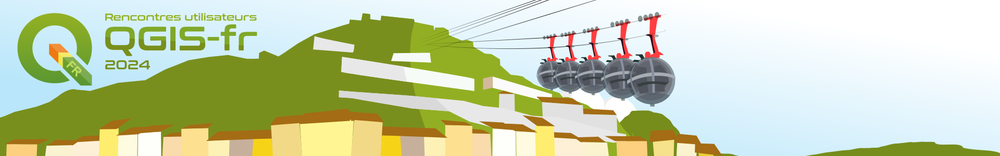</img></td> Julien Cabieces / Jacky Volpes <img src="oslandia_logo_164x164.png" height="150" /> --- ### Qui sommes nous ? <table vertical-align="middle"> <tr><td><img text-align="center" src="juc_rond.png" height="250" /></td> <td> Julien Cabieces<br/> Developpeur C++/Python<br/> QGIS Core committer<br/> <em>@troopa81</em><br/> <img text-align="center" src="twitter_logo.svg" height="32" width="32"/><em>@CabiecesJ</em><br/> <img text-align="center" src="mastodon_logo.svg" height="32" width="32"/><em>@CabiecesJ@mapstodon.space</em> </td> </tr> </table> <table vertical-align="middle"> <tr> <td> Jacky Volpes<br/> Developpeur C++/Python<br/> Contributeur cœur QGIS & Plugins<br/> <em>@Djedouas</em><br/> <img text-align="center" src="mastodon_logo.svg" height="32" width="32"/><em>@djedouas@mamot.fr</em> </ul> </td> <td><img text-align="center" src="jvo_rond.png" height="250" /></td> </tr> </table> --- ## Plan de l'atelier - ✏️ Rendu catégorie, dégradé, ensemble de règles *(30')* - 🎭 Les masques sélectifs *(30')* - 📐 Générateur de géométrie *(45')* - ⏱️ La dimension temporelle *(30')* - 🗎 Mises en pages et rapport *(45')* *On ne parlera pas de la symbologie des raster* 😢 --- ## Rendu par catégorie, gradué, règles --- #### Chargez la donnée: Les bâtiments de Grenoble - Téléchargez la [donnée](batiments_grenoble.gpkg) - Extrait de la [base de données nationale des bâtiments](https://bdnb.io/download/) - *Seulement quelques champs ont été sélectionnés* --- #### Rendu catégorisé 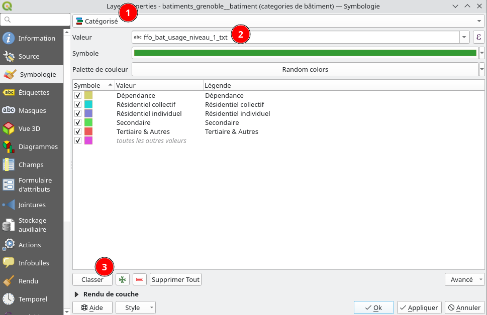 --- #### Rendu gradué - Sélectionnez le style *"classe énergétique"* - Étudiez la symbologie --- #### Rendu par règle (Exercice) - On veut la classe énergétique - **ET** des hachures si c'est du *Résidentiel collectif* --- #### Rendu par règle (Réponse) 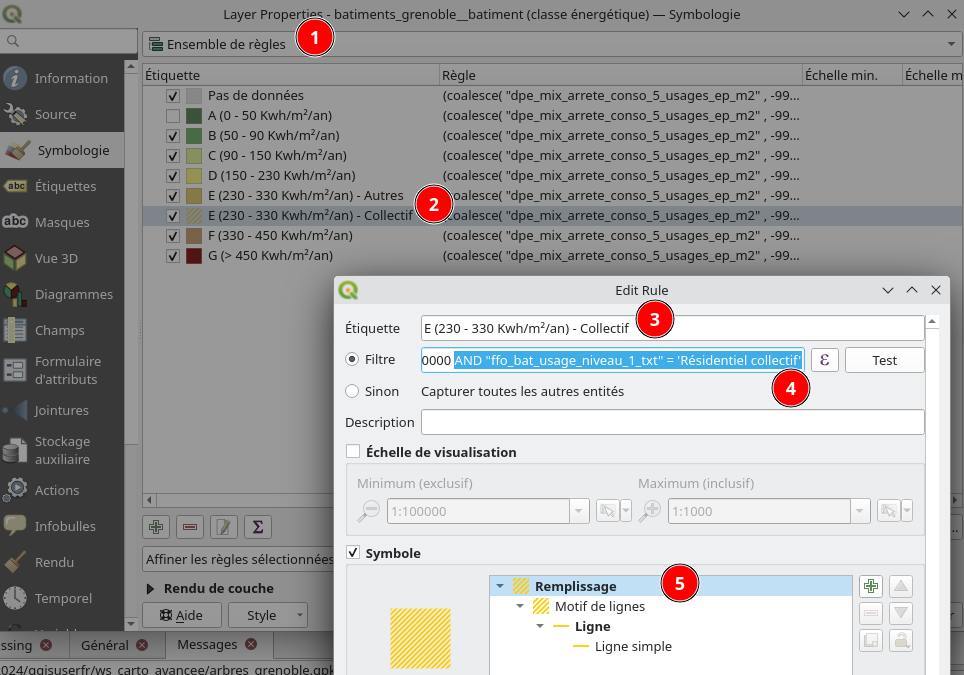 AND "ffo_bat_usage_niveau_1_txt" = 'Résidentiel collectif' --- ## Les masques sélectifs <img height="500" src="bobsm_nonmasked.jpg" /> --- ### Selective masking Kezako ?  --- <img height="500" src="bobsm_nonmasked.jpg" /> --- 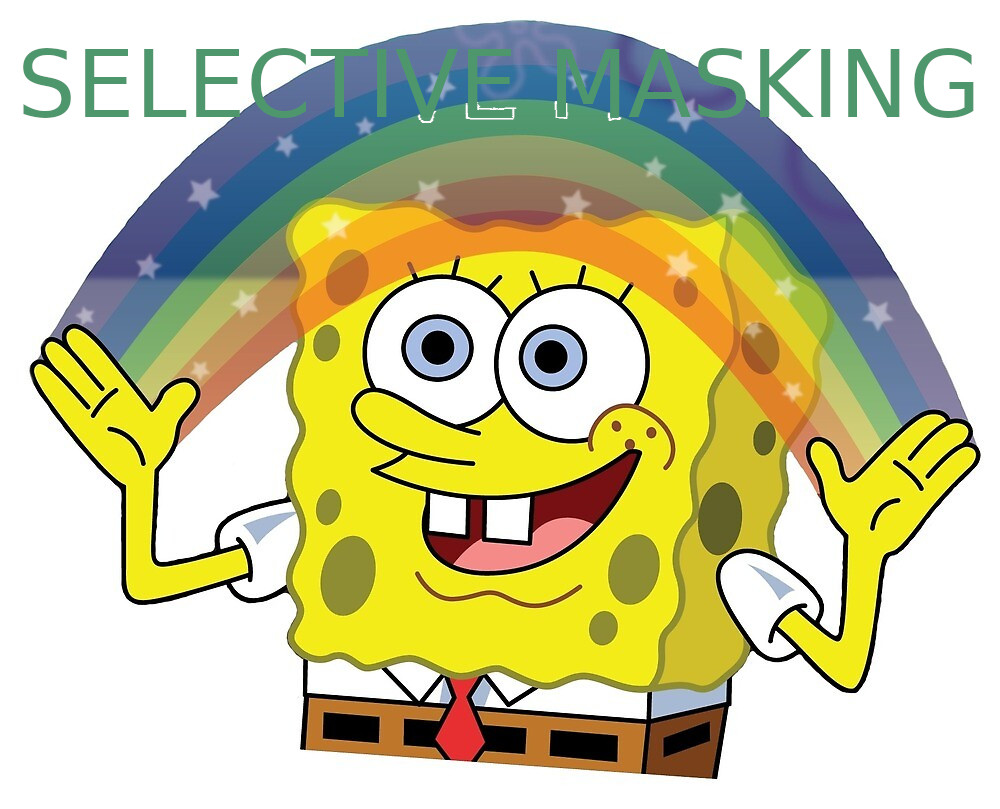 *Ce trucage a été réalisé par des professionnels ... sans QGIS* --- <img height="500" src="layout_export.png" /> - 1 symbole d'une couche masque 1 autre symbole d'une couche - On peut avoir plusieurs masques - **Ceci n'est pas un buffer** --- ### Prérequis - Téléchargez le fichier [selective_masking.gpkg](selective_masking.gpkg) - Glissez-Déposez dans QGIS - Sélectionner le projet "selective_masking" 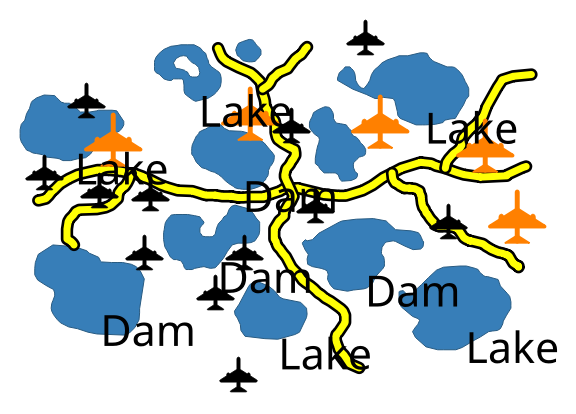 --- ### 1er exercice Les étiquettes des polygones doivent masquer la partie noire des lignes --- #### 1. Configuration du masque 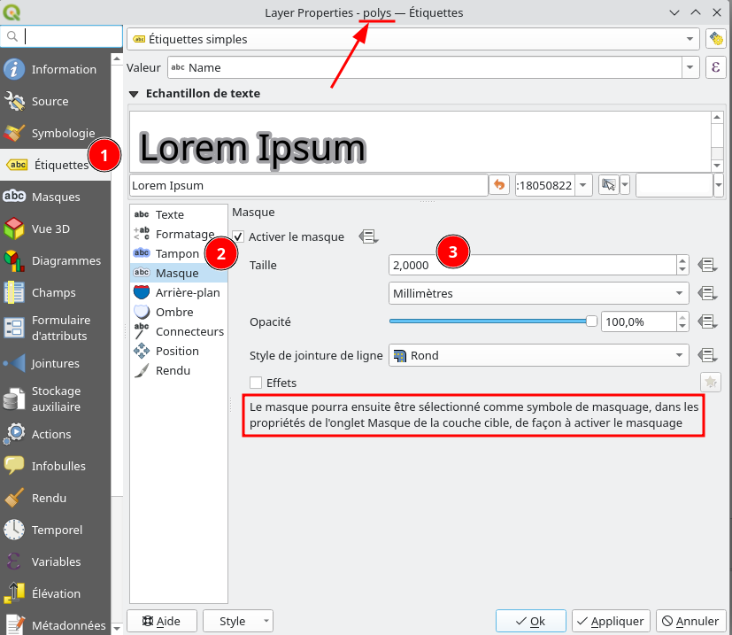 --- #### 2. Configuration de ce qui est masqué <img height="500" src="smask_masquageconfig.png" /> --- #### Résultat 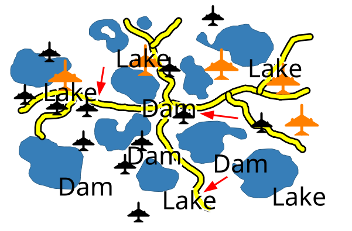 --- ### 2ème exercice Le symbole *Jet* doit masquer la partie noire des lignes --- #### 1. Configuration du masque <!-- TODO arriver à mettre cette foutu fleche au milieu, le style du haut bloque --> <table > <tr><td> 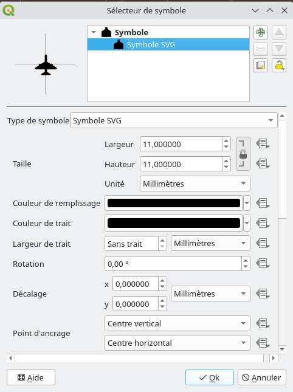</t> <td vertical-align="middle !important">➡️</td> <td><img height="500" src="smask_symbol.png" /></td> </tr> </table> --- #### 2. Configuration de ce qui est masqué 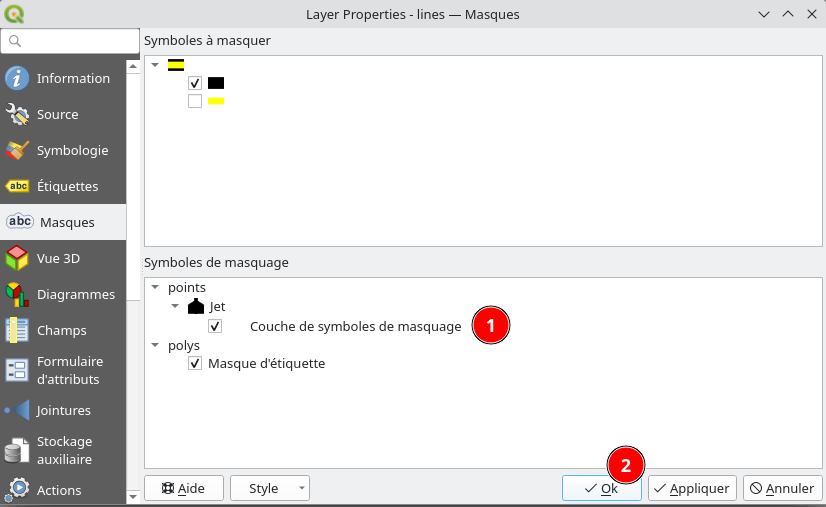 --- #### Résultat 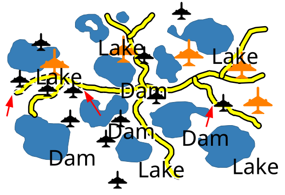 --- #### Modifiez le symbole de masquage - Aggrandissez sa taille - Zoomez/Dézoomez - Qu'observez vous ? --- #### Le masquage a été supprimé 😱 - Un nouveau symbole a été créé lors du changement - Le lien de masquage avec l'ancien symbole est cassé --- #### Export PDF - *Projet* > *Importer/Exporter* > *Exporter la carte au format PDF* - La carte est au format vecteur - Sauf si vous cochez *Transformer la carte en raster* - Exportez avec et sans masques - Qu'observez vous ? --- #### Export PDF 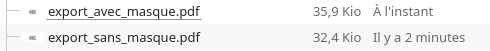 - l'export avec masque est 10% plus gros...dans cet exemple - Plus y a de feature qui masque/masquée, plus le fichier sera gros - voire **TRÉS** gros (Go...) - et des fois, ça [crashe](https://github.com/qgis/QGIS/issues/50543) --- #### Fonctionnel... ...mais a quelques faiblesses/fragilités/limitations: - Lien de masquage cassé dés qu'on modifie le masque/masqué - Pas d'avertissement quand un lien de masquage est cassé - Export peut [crasher](https://github.com/qgis/QGIS/issues/50543) si beaucoup d'éléments - Export vectoriel génère des énormes fichiers - Ne fonctionne pas avec du SVG (limitation Qt) Cela pourrait être grandement amélioré 💸 --- ## Le générateur de géométrie --- ### Pour quoi ? - Créer des symboles sur-mesure - Placer des étiquettes à des endroits particuliers - Révéler votre créativité  [Article Geotribu : Réaliser une carte comme la couverture de l'album Unknow Pleasures de Joy Division](https://geotribu.fr/articles/2022/2022-07-11_qgis_joy_division/) --- ### Exemples (1/5) : point de mesure  --- ### Exemples (2/5) : zone réservée  --- ### Exemples (3/5) : zone réservée  --- ### Exemples (4/5) : zone de couverture  --- ### Exemples (5/5) : passages piétons  --- ### TP : jeu de données [Télécharger le géopackage](generateur_geometries.gpkg) - Couche de points : points de mesures - Couche de points : caméras avec orientation et angle de vue - Couche de lignes : zones de stationnement - Couche de lignes : passages piétons - Couche de polygones : Routes Correction : [Projet avec tous les symboles](./generateur_geometries.qgz) --- ### Par où démarrer ? Dans la section **Symbologie** des paramètres de couche. - Choisir **Générateur de géométrie** comme type de symbole. - Choisir le type de géométrie ([Multi] Point/Polyligne/Polygone) - Lancer le constructeur d'expressions.  --- ### Interagir avec une autre couche (1/3) `overlay_nearest` permet de récupérer les entités d'une autre couche les plus proches d'une géométrie donnée. Sur la couche points **mesures**, entrer cette expression comme géométrie générée ``` shortest_line( $geometry, overlay_nearest('routes', $geometry, limit:=1, max_distance:=50)[0] ) ``` On crée la ligne entre notre point et la première entité la plus proche de la couche **routes**.  --- ### Symoble type "section" On agrandit cette ligne sur 20 mètres, et on garde l'intersection avec l'entité la plus proche de la couche **routes**. ``` intersection( extend( shortest_line( $geometry, overlay_nearest('routes', $geometry, limit:=1, max_distance:=50)[0] ), 0, -- pas d'extension côté début 20 -- 20m d'extension côté fin ), overlay_nearest('routes', $geometry, limit:=1, max_distance:=50)[0] ) ```  --- ### Un peu de détail On peut étendre un peu ce symbole de part et d'autre pour donner un aspect "mesure de section". ``` extend( intersection( extend( shortest_line( $geometry, overlay_nearest('routes', $geometry, limit:=1, max_distance:=50)[0] ), 0, -- pas d'extension côté début 20 -- 20m d'extension côté fin ), overlay_nearest('routes', $geometry, limit:=1, max_distance:=50)[0] ), 1, -- 1m d'extension côté début 1, -- 1m d'extension côté fin ) ```  --- ### Les variables On évite de répéter des calculs, et la duplication de code. Création d'une variable utilisable ensuite avec **@**. ``` -- Définition des variables with_variable( 'nearest_poly', overlay_nearest('routes', $geometry, limit:=1, max_distance:=50)[0], -- Code principal extend( intersection( extend(shortest_line($geometry, @nearest_poly), 0, 20), @nearest_poly ), 1, 1 ) ) ``` --- ### Attention La géométrie n'est pas là où le symbole apparaît.  On peut ajouter un niveau de symbole avec la géométrie réelle si besoin.   --- ### Symbole de zone de stationnement On veut seulement dessiner une ligne le long du trottoir où la zone va être placée par le générateur de géométrie.  --- ### Single sided buffer Zone de 1.50 m de large sur la route : ``` single_sided_buffer($geometry, 1.5, join:=2) ```  --- ### Pour décaler un peu la zone Pour décaler le rectangle, on pourrait utiliser la fonction `translate` mais il faut jouer avec la trigonométrie pour trouver les bons delta X et Y. Une astuce est d'utiliser la différence entre un rectangle plus grand, et un rectangle plus petit. Pour décaler de 20 cm du bord du trottoir :  --- ### Solution possible ``` with_variable('decalage', 0.2, difference( single_sided_buffer($geometry, 1.5 + @decalage, join:=2), buffer($geometry, @decalage, cap:='square', join:='miter') ) ) ``` --- ### Stationnement de bus Créer une ligne qui zigue-zague entre 2 côtés de 2 "single_sided_buffer" :  --- ### Préparation Nous aurons besoin de plusieurs variables dans notre expression : - **rect1** et **rect2** (petit et grand single_sided_buffer) - **l1** et **l2** (ligne de base et haute du symbole)  --- ### Fonctions utiles On va chercher à placer des points le long des lignes l1 et l2 : voir `line_interpolate_point`. Pour être compatible avec des lignes de plusieurs segments, combiner `array_foreach` et `geometries_to_array` et `collect_geometries`.  --- ### Passages piétons 2 symboles générateurs de géométries : - un multipolygone de rectangles blancs le long de la ligne - un rectangle de fond gris le long de la ligne  --- ## La dimension temporelle --- ### Récupérez la donnée - Téléchargez [Les arbres de Grenoble](arbres_grenoble.gpkg) - Donnée d'[origine](https://data.metropolegrenoble.fr/visualisation/export/?id=arbres-grenoble&disjunctive.sous_categorie_desc&disjunctive.espece&location=12,45.18821,5.74699) - récupérée/modifée sur le [portail](https://data.metropolegrenoble.fr/) de la métropôle de Grenoble - Ouvrir le projet --- ### Problème: Pas de date 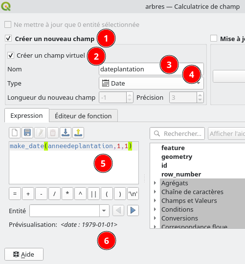 - timestamp / begin / end sont NULL - Création d'une date à partir d'*anneedeplantation* --- ### Configuration temporelle 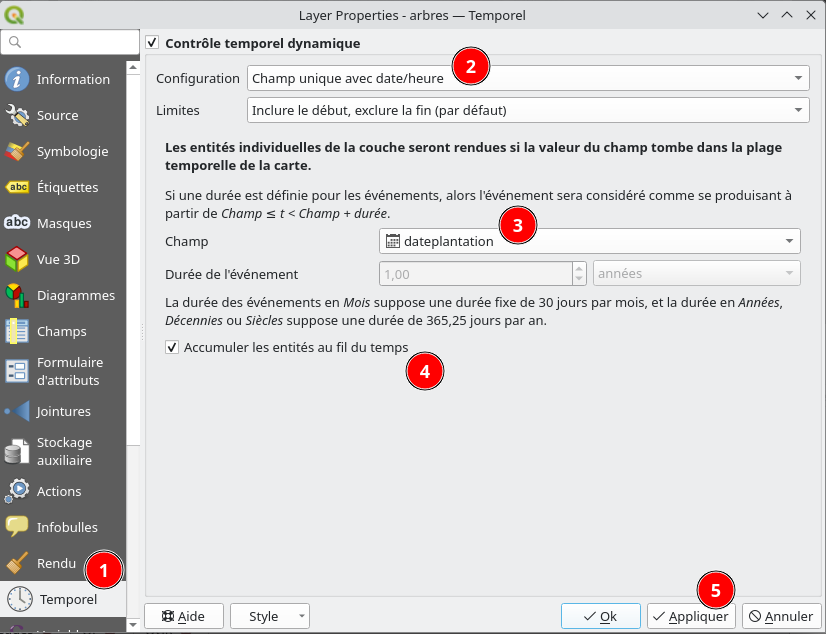 - Activez le *Panneau Contrôleur temporel* - Clic droit sur la boîte à outil - Réglez la *Plage d'animation* et le *Pas* - *Play* --- ### Configuration temporelle 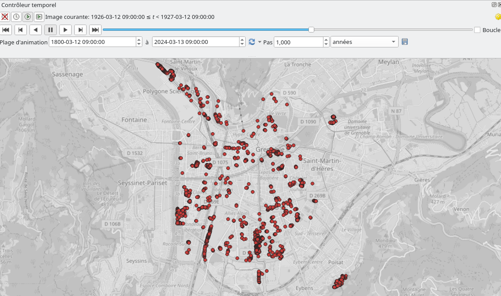 - Flickering désagréable à chaque *pas* 🤢 --- ### Rendu Heatmap 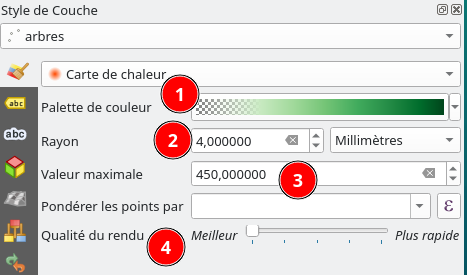 - 1. Opacité sur les premiers stops (0%, 50%) - 2. Si *Automatique* : Rendu non constant, adaptatif en fonction du min/max - 2. Fixe (400 pas mal): - Si trop **bas**, saturation zones de fortes densité - Si trop **haut**, zones de faible densité disparaissent - 3. *Plus rapide* quand on manipule --- #### Décorations 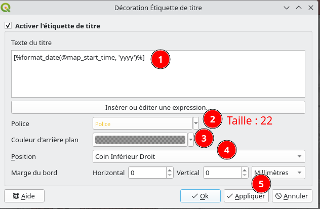 --- ### Créer un GIF (1/2) 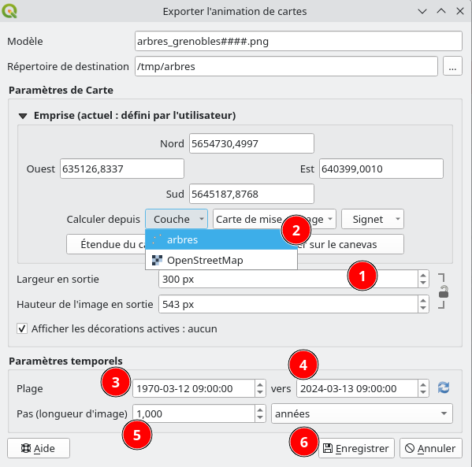 - Export une liste d'image - **D'abord** la largeur en pixel, puis la couche (dessin sur le canvas) --- ### Créer un GIF (2/2) - Générer le GIF - En ligne [Ezgif](https://ezgif.com/maker) - Avec [GIMP](https://www.birdseyeviewgis.com/blog/2020/8/14/creating-a-covid-19-temporal-animation-with-qgis) - Sous Windows avec l'application d'édition vidéo intégré  --- ### Quelques liens utiles - *[Geogiffery](https://www.gispo.fi/en/blog/geogiffery-in-2020-with-qgis-temporal-controller/) in 2020 with QGIS temporal controler* par **GISPO** - *[Creating a COVID-19 Temporal Animation](https://www.birdseyeviewgis.com/blog/2020/8/14/creating-a-covid-19-temporal-animation-with-qgis) with QGIS* par **Kurt Menke** - *[Animating Time Series Data](https://www.qgistutorials.com/en/docs/3/animating_time_series.html) in QGIS 3* par **Ujaval Gandhi (spatialthoughts)** --- ## Mises en pages et rapport --- ### Avoir une page d'atlas pour chaque zone principale. Chaque page aura autant de carte que de zones secondaires. Charger les couches atlas zones principales et secondaires :  --- ### Résultat désiré  Des idées ? --- ### Lien entre zones principale et secondaires Ajouter un champ virtuel dans la table des zones secondaires pour savoir à quelle zone principale elle appartient. Voir la fonction `overlay_within`.  --- ### L'atlas Comme nous avons une page par zone principale, c'est notre couche de couverture. Le nom de la page sera le champ "nom". Créer une première carte pour la zone secondaire 1, définir les expressions pour l'emprise - min X, min Y - max X, max Y Voir la fonction `get_feature`. *Astuce* : pour prévoir les cartes des autres zones secondaires, utiliser les variables de l'objet pour le numéro de zone. --- ### L'opacité S'il n'y a pas de zone du numéro concerné, il faut que la carte n'apparaisse pas sur la page. Écrire une expression adaptée pour l'opacité de la carte dans la section *Rendu*.  --- ### Le style de couche comme filtrage Pour ne pas voir apparaître les autres zones secondaires dans une carte, utiliser une symbologie **ensemble de règles** avec une règle de filtrage utilisant les variables `@atlas_page_name` et celle du numéro de zone secondaire. Avant  Après  --- ### Atlas temporel Avec le projet des arbres de Grenoble, créer une mise en page, et configurer l'atlas. Une page correspondra à un intervalle de temps (voir la couche `intervalles` qui sera utilisée comme couche de couverture). Dans les propriétés de la carte ajoutée à la mise en page, cocher **Plage temporelle** et définir les expressions adéquates. Voir la fonction `attribute`. --- ### Aperçu  --- # Questions Rencontres des Utilisateurs Francophones de QGIS<br/> Grenoble - 27/03/2023 </td><td></img></td> Julien Cabieces / Jacky Volpes <img height=150px src="oslandia_logo_164x164.png">